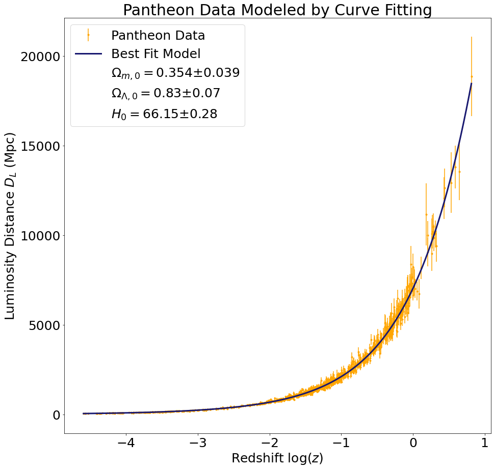

Background
In 1917, Albert Einstein published his paper describing the general theory of relativity. However, in this paper, Einstein assumed a static universe (\(\omega = 1 \)). Just over ten years later, Hubble published an article in 1929 where he presented empirical evidence that we instead live in an expanding universe. By observing the redshift of distant galaxies, Hubble derived his famous equation:
\[v = H_0 D \]
Known as Hubble’s Law, this equation states galaxies are moving farther away at a speed proportional to their distances. If we examine Hubble’s data explicitly:

From his infamous formula, his data gives a Hubble constant \(H_0 \approx 450 \). Despite applying the correct equation, Hubble incorrectly derived his own constant because he did not look far enough away. Supplied with more sensitive instruments, scientists can derive much more accurate values for Hubble’s constant and cosmological parameters. For further information, refer to the theory page for further information on how we derived our values.
Data
For our data, we choose to work with three different Type 1a supernova surveys: SCP, Pantheon and SNLS. The plot below contains all of the raw data for redshift and luminosity distances. To display the improvements in the astronomical observation, we included Hubble’s initial data from his 1929 paper.
Going forward, we will be comparing the results of these three data sets. We will not be calculating cosmological parameters from Hubble’s data as there is not enough information to produce accurate phase space maps. Here are the three raw data sets plotted next to each other.
Results from Phase Space Sampling
We fit the supernova luminosity distance versus redshift data to the model described on our Theory page in two different ways: first using the SciPy curve_fit function, and second by sampling the \((\Omega_{m,0},\Omega_{\Lambda,0},H_0)\) phase space. The luminosity distance versus redshift plots below demonstrate that our cosmological parameters obtained via curve fitting provide a good fit to the data.



The cosmological parameters obtained using phase space sampling are very close to those obtained using curve fitting (see table below). Since the corresponding luminosity distance versus redshift plots are practically identical, we do not reproduce them here. However, we will zoom in on the high redshift regions of the plots from above to demonstrate that our models approximate the data well even in the most difficult regions to fit. This time we will use the cosmological parameters obtained by sampling the phase space instead of by curve fitting (but, as noted above, the two sets of parameters are equivalent for all practical purposes). In addition, we will plot the luminosity distance as a function of redshift for a few alternative values of the cosmological parameters to demonstrate that our model performs better than these alternatives.


To perform the phase space sampling, we selected many different combinations of cosmological parameters and computed the reduced chi-squared values that result from using those cosmological parameters to fit our data. The plots below demonstrate how the reduced chi-squared value varies across the \((\Omega_{m,0},\Omega_{\Lambda,0})\) phase space (keeping \(H_0\) fixed at its best fit value). We selected the cosmological parameters with the lowest reduced chi-squared as the best fit values.
From the reduced chi-squared plots, we can already begin to see that the region of phase space in which the true cosmological parameters are most likely to lie forms a diagonal stripe centered on the best fit value. To gain further insight into the region most likely to contain the true cosmological parameters, we also computed the survival function, which is defined as one minus the cumulative distribution function for the chi-squared distribution. We rescaled the probability distribution so as to measure probabilities relative to the best fit value. The results are shown in the plots below.


Lastly, we integrated the Friedmann equation using the cosmological parameters we calculated from each dataset. This allows us to determine the scale factor of the universe at all past and future times under each model. The results are labeled “Matter and dark energy” and appear in blue in the plots below. For comparison, we also included the scale factor for a matter-only universe (using the \(\Omega_{m,0}\) and \(H_0\) values we calculated but assuming \(\Omega_{\Lambda,0}=0\)) and for an empty universe (using the \(H_0\) value we calculated but assuming \(\Omega_{m,0} = \Omega_{\Lambda,0} = 0\)).
Discussion
In summary, we have calculated the best-fit values of \(\Omega_{m,0}\), \(\Omega_{\Lambda,0}\), and \(H_0\) in two ways: directly fitting a model to the data and sampling the phase space. Using the best-fit values of the cosmological parameters, we integrated the Friedmann equation to find the scale factor as a function of time. Our values of the cosmological parameters, along with the accepted values from the Benchmark Model, are summarized in the table below.
| Source |
Method |
\(\Omega_{m,0}\) |
\(\Omega_{\Lambda,0}\) |
\(H_0 (\text{km}\,\text{s}^{-1}\,\text{Mpc}^{-1})\) |
| SCP |
Curve Fit
Phase Space |
\(0.323 \pm 0.069\)
\(0.32\) |
\(0.75 \pm 0.11\)
\(0.75\) |
\(70.49 \pm 0.43\)
\(70.49\) |
| Pantheon |
Curve Fit
Phase Space |
\(0.354 \pm 0.039 \)
\(0.37\) |
\( 0.83 \pm 0.07 \)
\(0.87\) |
\( 66.15 \pm 0.28 \)
\(66.32\) |
| SNLS |
Curve Fit
Phase Space |
\(0.280 \pm 0.076 \)
\(0.25\) |
\( 0.85 \pm 0.11 \)
\(0.80\) |
\(77.11 \pm 0.39\)
\(76.84\) |
| Benchmark Model |
Ryden :) |
\(.30\) |
\(.70\) |
\(70\) |
Our results are close to those of the Benchmark Model, and in particular demonstrate that the universe contains a significant amount of dark energy—a monumental result first discovered with an analysis similar to our own by Riess et al. (1998) and Perlmutter et al. (1999). The discrepancies that do arise between our three datasets and the benchmark model fall within the error bars on the cosmological parameters obtained using phase space sampling. (Unfortunately, the phase space sampling method did not provide error bars, but we anticipate that the errors would be comparable to those from the direct fit method.) Another implication of our calculations is that \(\Omega_0 = \Omega_{m,0} + \Omega_{\Lambda,0} > 1\), which indicates that the universe is positively curved. It is also interesting to note that the Hubble constants we calculated are similar to state-of-the-art measurements of the CMB and of supernovae:
\[H_{0,\text{CMB}} = 67.4\pm 0.5\text{ km/s/Mpc}, \quad H_{0,\text{SNe}} = 73.0\pm1.0\text{ km/s/Mpc}\]
At first it might seem surprising that our results do not align more closely with the accepted \(H_{0,\text{SNe}}\) value given that our calculations were also based on supernovae. However, this result is not implausible because measurements of the Hubble constant have changed over time and as observational techniques improve.
Next Steps:
If we had unlimited time to complete this project, we would have liked to have a feature on the website that allowed users to import their values for the cosmological parameters and a scale factor plot would be generated. The feature is technically available in our jupyter notebooks (linked on our github, see about page) but we did not have enough time to make this part of our website.